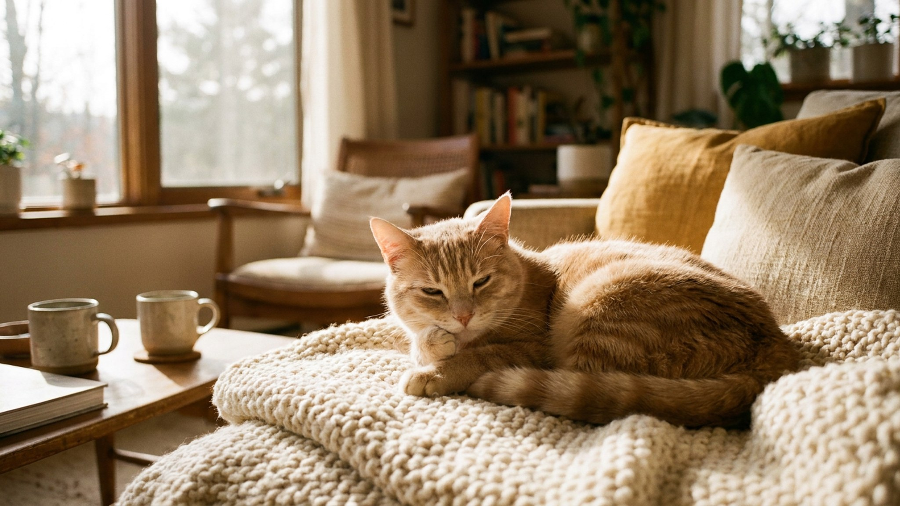

Внешность — как у мини-тигра: чёткие вертикальные полосы, крупная голова, плотное мускулистое тело. Но возьмите тойгера на руки — и «хищник» начнёт мурлыкать и тыкаться носом в шею. Это порода, которую вывели именно так: тигриный вид плюс собачья преданность. Разбираемся, что за кошка тойгер на самом деле и чего от неё ждать в быту.
🐾 Первая помощь — всегда под рукой
AnimaLife подскажет, что делать в тревожной ситуации с питомцем ещё до визита к врачу. Откройте в один тап.
Тойгер — американская дизайнерская порода, работа над которой началась в конце 1980-х годов. Заводчик Джуди Сагден поставила задачу создать кошку, которая выглядит как тигр, но остаётся полностью домашней по темпераменту. В основе — отбор по рисунку шерсти: стандарт требует чётких вертикальных полос-маркировок по всему телу (а не пятен, как у бенгала или саванны) и характерного циркулярного узора на голове.
TICA признала породу в 2007 году. Тойгеры до сих пор редки: питомников немного даже в США и Европе, в России котята встречаются нечасто, цена стартует от 80–150 тысяч рублей за животное с документами. Перед покупкой стоит убедиться, что питомник зарегистрирован и имеет родословные TICA или WCF.
Несмотря на внешность хищника, тойгер — одна из наиболее дружелюбных пород. Агрессии к людям или другим животным практически нет: порода создавалась с акцентом на мягкий, контактный нрав.
Тойгер легко сходится с новыми людьми, а незнакомцев встречает без страха и без атаки — просто обнюхивает и принимает.
Это активная порода. Тойгер не устроит вас в роли диванного украшения: ему нужны игры, смена активностей и умственная нагрузка каждый день.
Без достаточной нагрузки тойгер начнёт скучать и найдёт занятие сам — обычно не в пользу мебели или занавесок.
Шерсть тойгера короткая и плотная — уход минимальный. Никаких колтунов, редкое вычёсывание.
Тойгер — порода для тех, кто хочет активного, умного и визуально эффектного компаньона. Дикий вид здесь только снаружи.
🐾 Экономьте на лишних визитах к врачу
Сначала спросите AI-ветеринара в AnimaLife — часто этого достаточно, чтобы понять, нужен ли визит к врачу.
🐾 Понравился разбор?
Подпишитесь на канал — каждый день разбираем по одному тревожному симптому у кошек и собак: что в пределах нормы, а когда пора к врачу. Подпишитесь, чтобы не пропустить разбор, который может спасти здоровье вашего питомца.